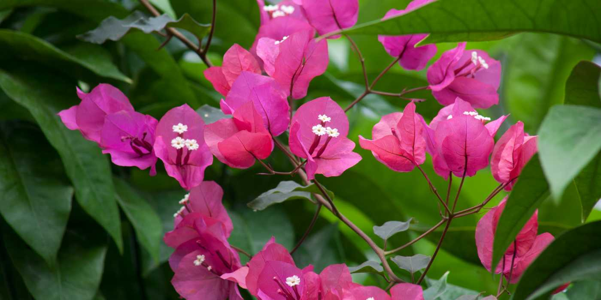
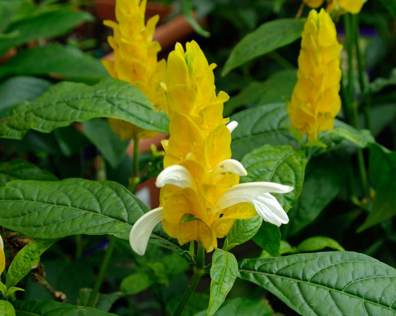

One of the most common flowering shrubs are low lying, extremely dense Bougainvillea shrubs. Many are fooled by the clever adaptations this plant show to attract pollinators for cross pollination. What may seem like bright pink petals from far away are actually modified leaves called bracts.
Bracts by definition are modified leaves which are typically small with a flower or flower cluster on its axil. However as it is in nature, bracts aren't actually limited to this definition.
It raised its head and waved it around a bit, in a surveying manner before bringing it down and dragging its body forward.
They are leaflike as in poinsettias, scalelike as on pinecone gingers and bromeliads, or even petal-like as on dogwoods. They can be brightly colored like those on Bougainvillea or green like those on sunflowers.
In terms of function, bracts are very diverse ranging from protecting young flowers, attracting potential pollinators, as well as entrapping insects in case of the passion flower.
In Bougainvillea , close observation of the flower reveals that the bright pink petals are in fact lined with veins, a clear giveaway of their actual origins. Bougainvillea has white flowers hidden within these large bracts that are so small that without the bracts the plant would have a hard time finding pollinators.
In Mawlynnong, a small village in Meghalaya I came across a plant showing a similar adaptation having white flowers with yellow bracts. Further digging revealed that it was Pachystachys lutea also known as lollipop plant or golden shrimp plant. In this the bracts form a cone from which the white flowers peep out. The bract cone can grow about 5 inches long.
